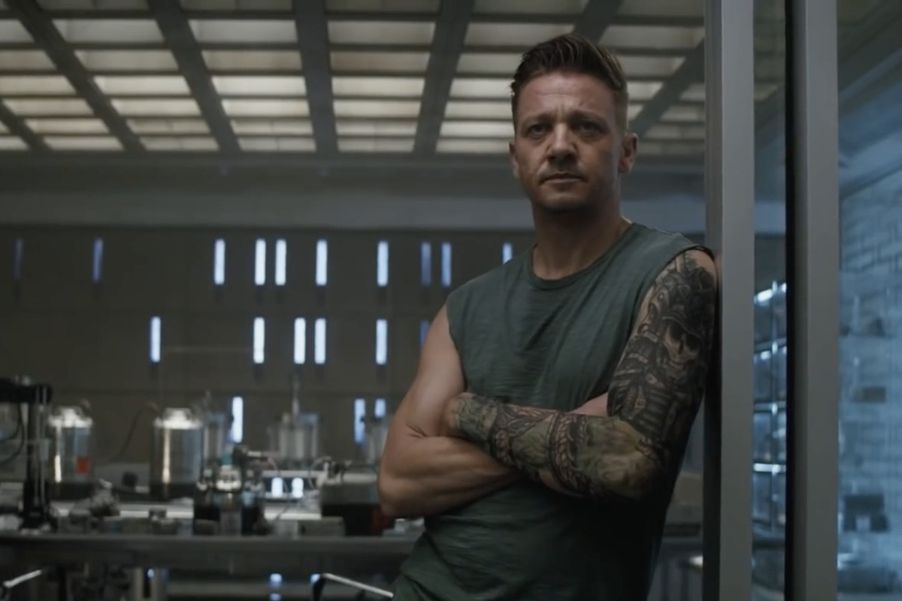

Jeremy Renner
Komiksová přezdívka: Hawkeye
- Jeremy Lee Renner je americký herec a hudebník.
- Ve filmu i televizi se poprvé představil v roce 1995.
- Hned několikrát ztvárnil postavu Hawkeye a to hned v 5 filmech
- Jeremy by měl mít ještě menší smlouvu s Marvelem, na pár menších snímků

Samuel L. Jackson
Komiksová přezdívka: Nick Fury
Organizace: S.H.I.E.L.D.
- Samuel Leroy Jackson je americký herec
- hraje v seriálu Agenti S.H.I.E.L.D
- Herec se nesčetně krát objevil v příběhů hlavních postav celého universu.
Chris Hemsworth
Komiksová přezdívka: Thor
- v MCU natočil 3 hry, kde ztvárnil hl. postavu Thóra v jeho trilogii
- Zatím, jako jediný z herců, kteří mají již natočenou trilogii svého hrdiny, bude pokračovat
- Nejdříve by si měl zase zahrát ve vedlejší roli ve filmu Guardias of the Galaxy Vol.3
- Také se možná objeví v seriálu svého filmového bratra Lokiho (Tomma Hidlstona)
Robert Downey Jr
Komisková přezdívka: Iron Man
- Robert Downey Jr je americký herec, který byl na pokraji krachu v roce 2008
- Stejně jako s Robertem to vypadalo i s MCU studios
- Jejich poslední šance byla natočit snímek Iron Man, jako bod poslední záchrany
- což se také podařilo a snímek sklidil neskutečný úspěch
Chris Evans
Komiksová přezdívka: Captain America
- Tento americký herec se objevil hned v několika filmech od MCU
- od na sebe navzájem navazujících Avengers až po fantastickou čtyřku
- Jeho poslední natočený film v MCU je Avengers: Engame, kdy má jednu v velkých rolí
- Chris se také zmínil, že s MCU hodlá spolupracovat, ale už né jako herec